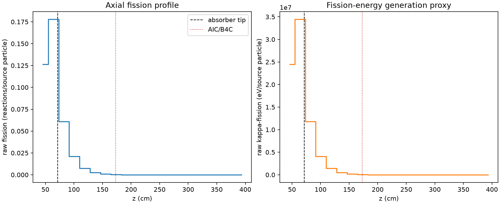
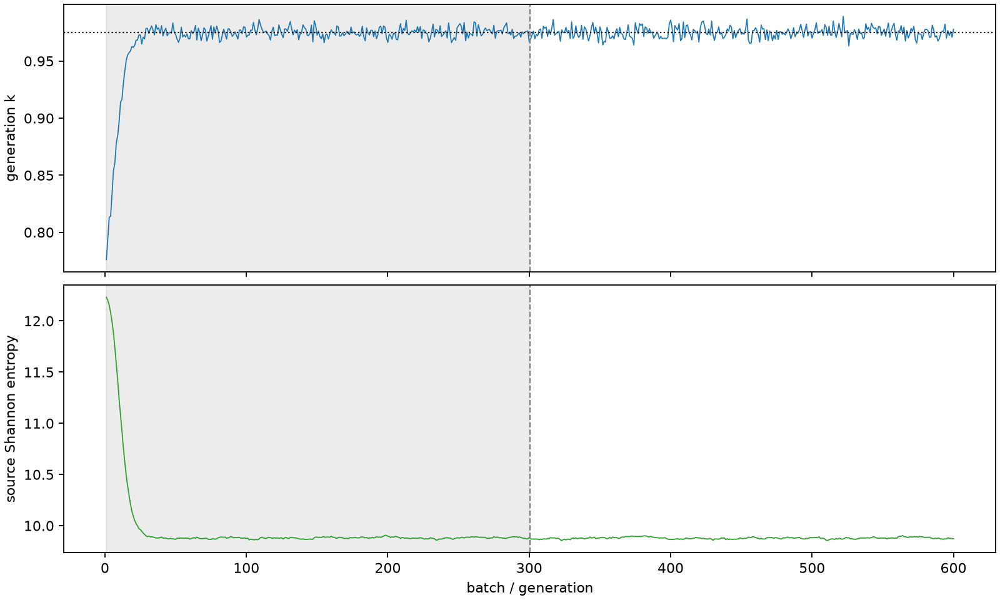

| field | value |
|---|---|
| experiment | V2-STAGE_128_OGRENCI_01-0005 |
| k | 0.9749227826187307 |
| MC standard error | 0.000201197009867186 |
| seconds | 936.2069911229919 |
| acceptance | not_assessed |
| convergence | review_required |
Completed is output integrity only; physical and statistical review required. Zero tallies do not prove zero production or zero uncertainty.
| diagnostic | value |
|---|---|
| geometric fuel voxels | 5280 |
| zero fission tally voxels | 1836 |
| low signal fuel voxels | 2921 |
| low signal fission share | 0.00010777851304213995 |
| low signal kappa share | 0.0001078187117082994 |
| important fission share | 0.9501484046489104 |
| previous filter included | 2359 |
| duration estimate s | 1562.5173488400023 |
| actual minus estimate s | -626.3103577170104 |
| fission relative MC error | statistics |
|---|---|
| all_geometric_fuel | {"voxels": 5280, "positive_mean_voxels": 3444, "zero_mean_voxels": 1836, "undefined_relative_error_voxels": 1836, "median": 0.05211446754233051, "p95": 0.946168503902994, "maximum": 1.0000000000000002} |
| low_signal | {"voxels": 2921, "positive_mean_voxels": 1085, "zero_mean_voxels": 1836, "undefined_relative_error_voxels": 1836, "median": 0.5317024718603184, "p95": 1.0, "maximum": 1.0000000000000002} |
| important_95pct | {"voxels": 939, "positive_mean_voxels": 939, "zero_mean_voxels": 0, "undefined_relative_error_voxels": 0, "median": 0.004889262712769418, "p95": 0.011034816280097127, "maximum": 0.012079532879531538} |
| outside_previous_filter | {"voxels": 2921, "positive_mean_voxels": 1085, "zero_mean_voxels": 1836, "undefined_relative_error_voxels": 1836, "median": 0.5317024718603184, "p95": 1.0, "maximum": 1.0000000000000002} |
| kappa_fission relative MC error | statistics |
|---|---|
| all_geometric_fuel | {"voxels": 5280, "positive_mean_voxels": 3444, "zero_mean_voxels": 1836, "undefined_relative_error_voxels": 1836, "median": 0.05203366212706091, "p95": 0.9457422700424386, "maximum": 1.0000000000000002} |
| low_signal | {"voxels": 2921, "positive_mean_voxels": 1085, "zero_mean_voxels": 1836, "undefined_relative_error_voxels": 1836, "median": 0.5302341976833405, "p95": 1.0, "maximum": 1.0000000000000002} |
| important_95pct | {"voxels": 939, "positive_mean_voxels": 939, "zero_mean_voxels": 0, "undefined_relative_error_voxels": 0, "median": 0.004882570697747808, "p95": 0.011016194868842713, "maximum": 0.01206358890213286} |
| outside_previous_filter | {"voxels": 2921, "positive_mean_voxels": 1085, "zero_mean_voxels": 1836, "undefined_relative_error_voxels": 1836, "median": 0.5302341976833405, "p95": 1.0, "maximum": 1.0000000000000002} |
| axial bin | fission share | kappa-fission share |
|---|---|---|
| 1 | 0.31753340023649185 | 0.3175151988559599 |
| 2 | 0.4472301870806169 | 0.44719307096074196 |
| 3 | 0.1528514803760935 | 0.15288653554397613 |
| 4 | 0.05330568176838965 | 0.05331871250430779 |
| 5 | 0.018905866550944964 | 0.018910466310738245 |
| 6 | 0.006741837232393683 | 0.006743491646213594 |
| 7 | 0.002365566670550971 | 0.002366191470202307 |
| 8 | 0.0007484136375297647 | 0.0007486482740547343 |
| 9 | 0.00022255731768873504 | 0.0002226416991435921 |
| 10 | 6.657067165593774e-05 | 6.659461829974657e-05 |
| 11 | 2.0784214758145847e-05 | 2.0791885014645354e-05 |
| 12 | 5.5736627086442705e-06 | 5.57542663556396e-06 |
| 13 | 1.9929026969323716e-06 | 1.993249092243809e-06 |
| 14 | 8.767748026716081e-08 | 8.755561959121375e-08 |
| 15 | 0.0 | 0.0 |
| 16 | 0.0 | 0.0 |
| 17 | 0.0 | 0.0 |
| 18 | 0.0 | 0.0 |
| 19 | 0.0 | 0.0 |
| 20 | 0.0 | 0.0 |
Histories include the inactive-to-active transition at batch 300. kappa-fission approximates fission energy production, not total heat deposition.

